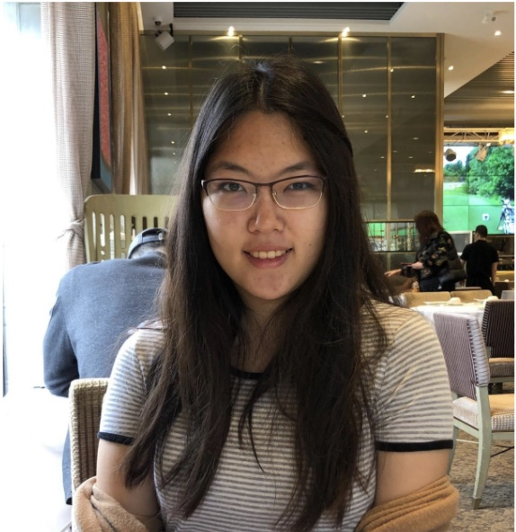
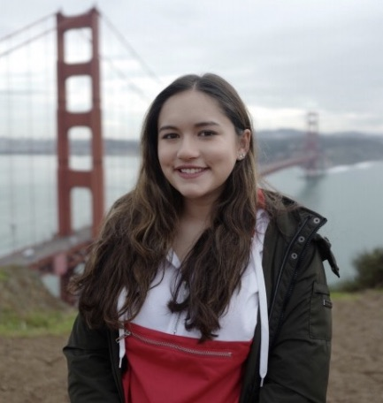
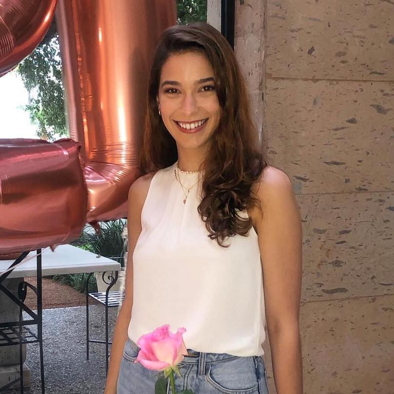
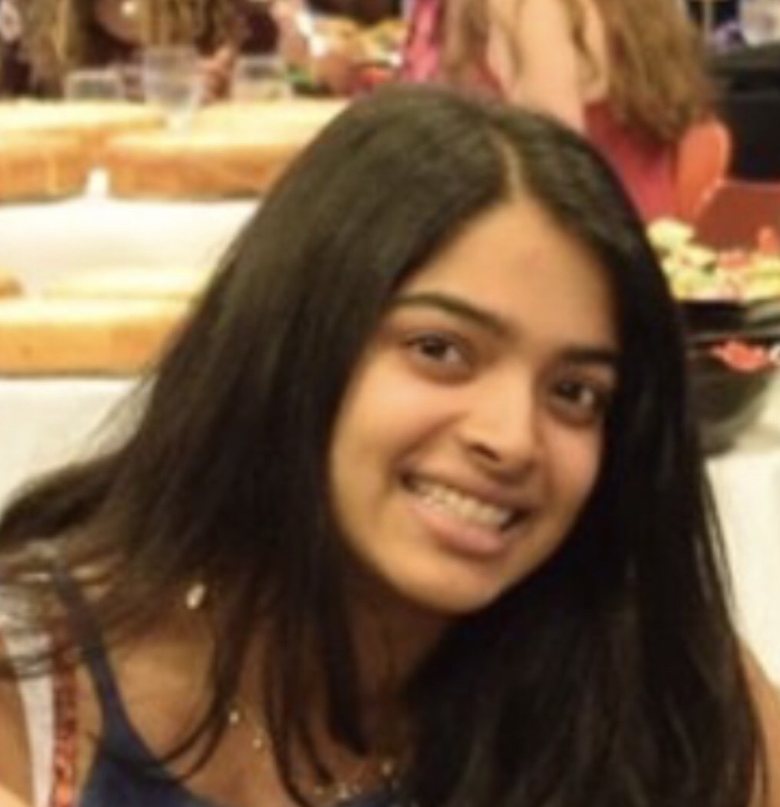
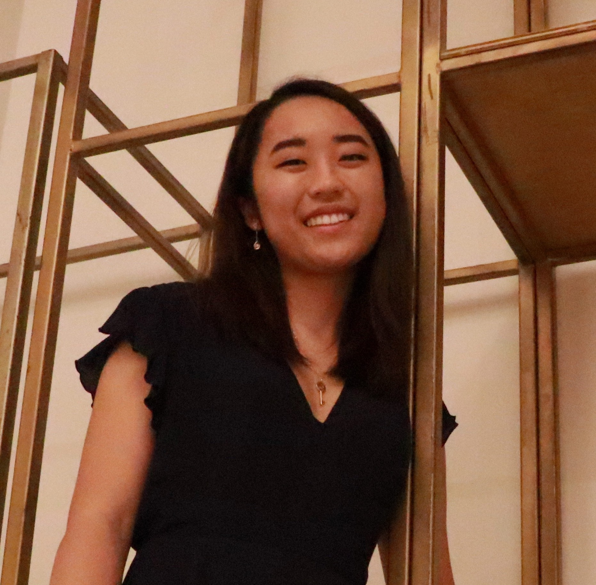
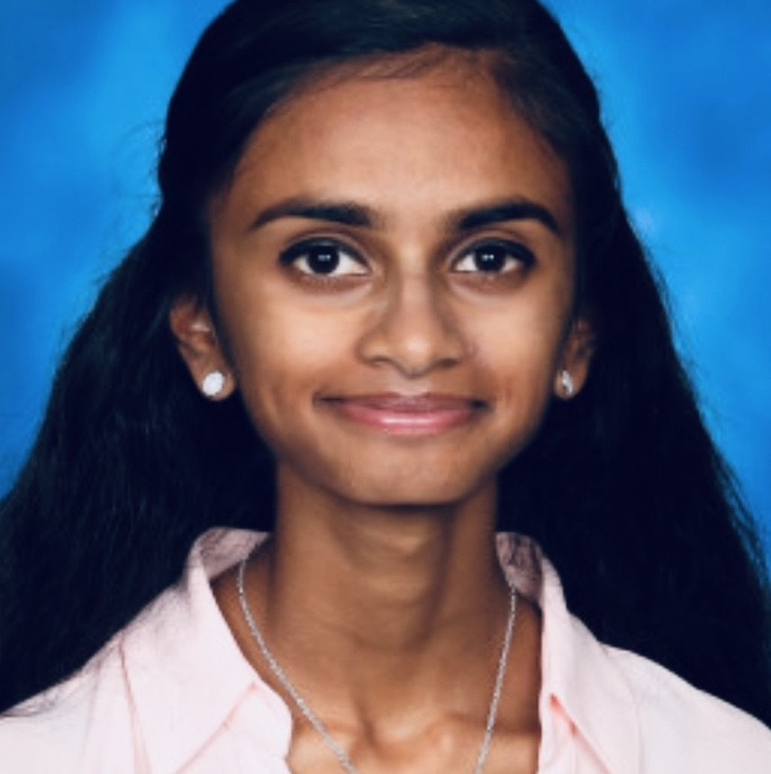

Nellie Chen, President Hanszen College '21 Health Sciences Major Medical
Humanities, Biochemistry and Cell Biology Minor
My name is Nellie Chen and I will be serving as your president of the Rice Medical Humanities club. I am a senior
from Hanszen, and I am majoring in Health Sciences and minoring in Medical Humanities and Biochemistry and Cell
Biology. Medical Humanities has always been a field that attracted my eye due to its interdisciplinary nature. I
joined the club my freshman year, and since then I have been the Hanszen college rep and secretary. I’ve seen the
club grow and expand over these past three years, and I am excited to help take the club in new directions!
Medical humanities is a very unique part of Rice, and I hope to draw greater interest for the program through our
speakers and events. By expanding our reach throughout campus, into the rich community of Houston, and to our
neighbors in the medical center, I hope to enrich the Medical Humanities club further. I’m eager to see where our
officers and I can bring the club next year.
Sally Yan, Internal VP McMurtry '22 Biochemistry and Cell Biology Major

My name is Sally Yan, and I am a junior at McMurtry majoring in Biochemistry and Cell Biology. I care deeply
about the medical humanities because it offers an opportunity to look at medicine from so many different
dimensions beyond the rigid scope of science, and I love that this club brings together students who also have
this conviction. I want to help continue to maintain and grow this amazing club and give other students at Rice an
opportunity to also explore medicine from these perspectives! I’ve been highly involved in the MedHum club since
my freshman year, first as a member of the Symposium Committee and then as the Symposium Committee Chair. As the
IVP, I’m interested in working to realize some of the amazing new interactive events our club had planned for the
end of this semester, such as the Bioethics Symposium and a filmmaking workshop with a faculty member.
Alyssa Cahoy, External VP Sid Richardson College '23 English Major Medical
Humanities, Biochemistry and Cell Biology Minor
My name is Alyssa Cahoy, and I am thrilled to be this year’s EVP! I am a sophomore from Sid Rich, majoring in
English with minors in Medical Humanities and Biochemistry/Cell Biology. This club has significantly broadened my
horizons as a pre-med student. I have been able to learn more about topics such as the commercialization of the
medical field, the social construction of illness and disease, the importance of patient-centered care, and more.
I love how this club supplements academic coursework in the Medical Humanities minor curriculum by offering
students hands-on experiences through volunteer work as well as opportunities to speak with a wide array of
healthcare professionals. As your EVP, I hope to form meaningful connections with fellow club members, and to
learn more about the interdisciplinary field we all share a passion for, medicine. I am looking forward to the
upcoming year.
Celeste Traub, Secretary Brown College '22 Biosciences Major

Hi Medical Humanities! My name is Celeste Traub, and I’m running to be your Secretary for next year. I’m a junior
from Brown majoring in Biosciences. I joined MedHum my Freshman year, and this past year I served as your Socials
Chair. Throughout my years at Rice MedHum has been really important to me, and through it I’ve learned so much
about the interdisciplinary aspects of medicine. As secretary, I will ensure great club communication and provide
a reliable source of MedHum club information. I’m very excited to be your secretary this year!
Madeline West, Treasurer Jones College '21 Sociology Major Medical Humanities
Minor

Hi, my name is Madeline West and I’ll be the Rice MedHum Treasurer this year! I’m a senior at Jones College
majoring in Sociology and minoring in Medical Humanities. As a member of the club for 3 years now and the
publicity chair this past year, I have a solid foundation of what events occur and what they need. I’m excited to
work closely with others in the club to manage our budget, keep all of our funds organized, and be as efficient as
possible!
Arnav Sankaranthi, Symposium Chair Brown College '23 Biosciences Major
Annika Nambiar, Coffee Chats Chair McMurtry College '23 Biochemistry and Cell Biology
Major
Neuroscience Minor

Alekhya Gurrami, Socials Chair Will Rice College '23 Health Sciences, Spanish &
Portugese Major
Mabel Tang, College Rep Chair Hanszen College '23 Biochemistry and Cell Biology Major

Ashna Karpe, Publicity Chair Duncan College '23 Psychological Sciences Major
Aishani Gargapati, Fundraising Chair Wiess College '23 Biosciences Major Medical
Humanities Minor

Shreyas Karki, Outreach Chair Brown College '23 English (Creative Writing) Major
Biochemistry and Cell Biology Minor